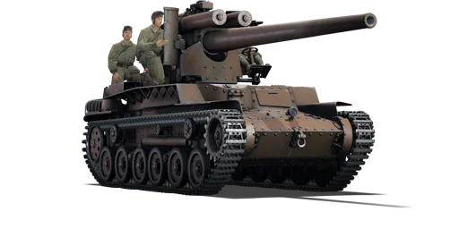

Chi-Ha LG
Caça-Tanques de Artilharia (Canhão de Vidro) | Nível II


Especificações Técnicas
| Armamento Principal | Canhão Naval 120 mm (10th Year Type) |
|---|---|
| Munição Padrão | SAP (Perfuração com Explosivo) / HE |
| Blindagem Frontal | 25 mm (Chassi) / 0 mm (Escudo do Canhão) |
| Tripulação | 5 Membros (Completamente Expostos) |
| Velocidade Máxima | 40 km/h |
Histórico de Desenvolvimento
Desenvolvido nos estágios finais da Segunda Guerra Mundial, o Chi-Ha LG (Long Gun) foi uma tentativa desesperada da Marinha Imperial Japonesa de fortalecer suas defesas terrestres contra a iminente invasão anfíbia dos Estados Unidos. Sem recursos para projetar um caça-tanques do zero, os engenheiros pegaram o chassi ultrapassado do tanque médio Type 97 Chi-Ha e adaptaram um massivo canhão naval de defesa costeira de 120 mm (10th Year Type) sobre o deck do motor.
Devido ao tamanho colossal da arma, ao recuo extremo e à falta de matérias-primas, não havia espaço ou peso disponível para instalar uma casamata ou qualquer tipo de proteção blindada ao redor da arma. O resultado foi uma plataforma que oferecia um poder de fogo absolutamente letal contra qualquer tanque Aliado da época, mas que forçava a tripulação a operar a arma em pé, completamente exposta ao tempo, a estilhaços e a tiros de fuzil.
Dentro do rigoroso sistema de dano do War Thunder, o Chi-Ha LG é a definição máxima de "Canhão de Vidro". No seu baixo Battle Rating (Nível II), o projétil SAP (Semi-Armor Piercing) de 120 mm carrega uma carga de explosivo tão absurdamente grande que qualquer penetração garante a destruição instantânea do alvo, e até mesmo tiros não penetrantes podem matar a tripulação inimiga por sobrepressão (Overpressure). O contrapeso dessa letalidade é ser o veículo mais frágil da partida, morrendo facilmente para metralhadoras coaxiais e aviões.
Doutrina de Engajamento e Táticas
- O Predador de Emboscada: A rotação do seu canhão é manual e muito lenta, e a recarga é demorada. Nunca vá para a linha de frente. Utilize táticas puras de franco-atirador (Sniper): encontre um desfiladeiro, monte ou folhagem, espere o inimigo cruzar a sua mira, faça o disparo devastador e engate a marcha à ré para sumir do mapa enquanto recarrega a enorme pesada bala de 120 mm.
- O Canhão de Vidro Definitivo: Você não tem blindagem na torre. Literalmente. Qualquer tanque inimigo com uma metralhadora de 7.62mm ou .50 cal pode matar toda a sua tripulação em um piscar de olhos sem precisar usar o canhão principal. Se você for avistado e não puder atirar primeiro, recue imediatamente.
- Alerta Vermelho de Ameaça Aérea (CAS): Com a tripulação no convés aberto, você é o alvo mais suculento do mapa para qualquer avião inimigo. Caças em ataques rasantes (strafing) ou artilharia caindo a 30 metros de distância são fatais. Posicione-se sempre perto de casas, sob árvores densas para esconder sua silhueta vista de cima, ou certifique-se de estar próximo a uma antiaérea aliada.